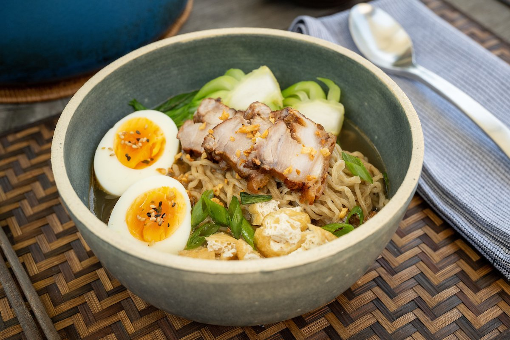

The Greatest piece of culinary product to ever exist: Philippine Batchoy
Return to List

Short description
Batchoy, alternatively spelled batsoy ([ˈbatʃoɪ]), is a Filipino noodle soup of pork offal, crushed pork cracklings
, chicken stock, beef loin, and round noodles.
The original and most popular variant, La Paz batchoy, traces its roots to the Iloilo City district of La Paz, in the Philippines.
Ingredients
- Fresh egg
- Broth
- Noodles
- Pork meat
- Chicharon
- 4 cups of water
- Pork liver
Steps to prepare
- Start by boiling 7 cups of water in a cooking pot. Once boiling, add 1.5 teaspoons of salt, 2 teaspoons of sugar,
1 teaspoon of onion powder, 1/2 teaspoon of ground black pepper, and 1 teaspoon of shrimp paste (optional).
Cook this mixture for one minute to allow the flavors to blend, creating a rich base for the Batchoy.
- Next, add 1 pound of pork to the broth. Cook the pork until it becomes tender,
which will take about 30 to 45 minutes. This step is essential,
as the pork provides the main protein and contributes a rich flavor to the Batchoy.
- After the pork is tender, introduce 1 pound of cleaned and sliced pig intestines and 1/4 pound of sliced pig liver into the pot.
Cook these ingredients for an additional 6 to 10 minutes.
This addition enhances the dish with textures and flavors that are characteristic of traditional Batchoy.
- Once cooked, remove the pork, liver, and intestines from the broth and set them aside.
Slice the pork into thin strips to prepare it for serving.
This makes it easier to enjoy the rich flavors in each bite of the Batchoy.
-
In a single serving bowl, arrange 1 pound of pre-boiled miki noodles. Place the sliced pork, liver, and intestines on top of the noodles.
This arrangement sets the stage for the final assembly of your Batchoy.
-
Pour the hot broth over the noodles and meat, ensuring everything is well-covered.
Finally, garnish the dish with 1 cup of crushed pork cracklings (chicharon),
3 tablespoons of chopped spring onions, and 1/4 cup of toasted garlic. These toppings add texture, flavor, and visual appeal.
Serve the Batchoy hot, inviting everyone to enjoy this comforting and flavorful noodle soup that brings together a delightful blend of ingredients and textures.
Return to List